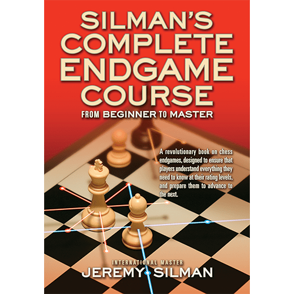

chess books for kids
Kasparov became the youngest-ever undisputed World Chess Champion in 1985 at age 22 by defeating then-champion Anatoly Karpov.[4] He held the official FIDE world title until 1993, when a dispute with FIDE led him to set up a rival organization, the Professional Chess Association.
Garry Kimovich Kasparov
Russian chess grandmaster, former World Chess Champion
